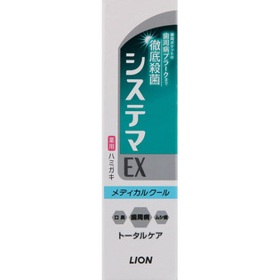
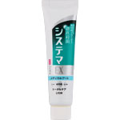

返回列表
产品名称：システマ EXハミガキ メディカルクール

ライオン システマ EXハミガキ メディカルクール ３０ｇ（医薬部外品）
メーカー ライオン
JANコード 4903301101765
商品の特徴
浸透殺菌＋菌付着ブロック
歯周ポケットケアで歯周病を防ぐ
歯周病 口臭 ムシ歯 トータルケア
薬用
成分・分量
PG／ラウリル硫酸Na／香料／ラウロイルサルコシンNa／イソプロピルメチルフェノール
用法及び用量
適量をハブラシにとり、歯及び口腔内を清掃してください。